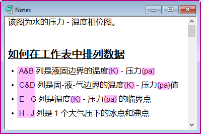

Origins Projektdatei kann verschiedene Zeichen mischen, wie Text, Symbol und Pfeile, außerdem verschiedene Sprachen wie Englisch (lateinisches Alphabet) und Chinesisch (Logogramme). Eventuell finden Sie es nützlich, ihre Standardschriften jeweils global zu steuern. Der Dialog Spezielle Standardschriften wurde zu diesem Zweck eingeführt. Wenn Sie eine Standardschrift für eine Art von Zeichen, wie griechische Symbole, festlegen, werden alle griechischen Zeichen an den verschiedenen Stellen (Diagramm, Notizen, Arbeitsblatt etc.) entsprechend aktualisiert.
| Mathematisches Symbol | Steuert die Standardschrift der mathematischen Symbole, die von der Registerkarte Mathematik der Abbildung Symbole eingefügt werden. |
|---|---|
| Pfeil/Sonstiges Symbol | Steuert die Standardschrift der Symbole, die von den Registerkarten Pfeil und Sonstiges der Abbildung Symbole eingefügt werden. |
| Unicode-Griechisch | Steuert die Standardschrift der Symbole, die von den Registerkarten Griechisch und Europäisch der Abbildung Symbole eingefügt werden. |
| Feste Breite | Wird hauptsächlich für Skripte verwendet. |
| Asiatisch | Wird für asiatische Sprachen, wie Chinesisch, Japanisch etc., verwendet. |
| Westlich | Wird verwendet, um die Schrift für lateinische Zeichen in einer nicht-englischen Umgebung festzulegen. |
Hinweis: Wie in der obigen Tabelle aufgeführt, wird dieser Dialog hauptsächlich in der Abbildung Symbole oder als Escape-Code für gemischte Schriften verwendet. Wenn Sie die Standardschrift in der Symbolleiste festlegen möchten, verwenden Sie bitte Einstellungen: Dialog Optionen > Registerkarte Zeichensätze.
Angenommen, wir erstellen einen kurzen Absatz mit einer Mischung aus Chinesisch und Englisch. Wir können die Schrift der lateinischen Zeichen festlegen mit
\f:e(Latin Characters)
Sehen Sie, wie die Anzeigen mit der im Dialog Spezielle Standardschriftarten festgelegten Schriftart aussehen:
| Standardschrift |
|
|
|---|---|---|
| Anzeige |  | |